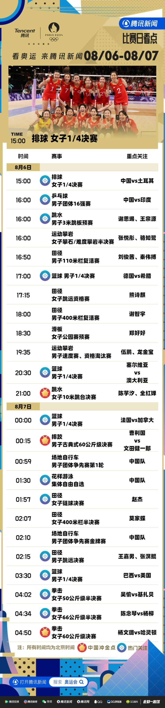
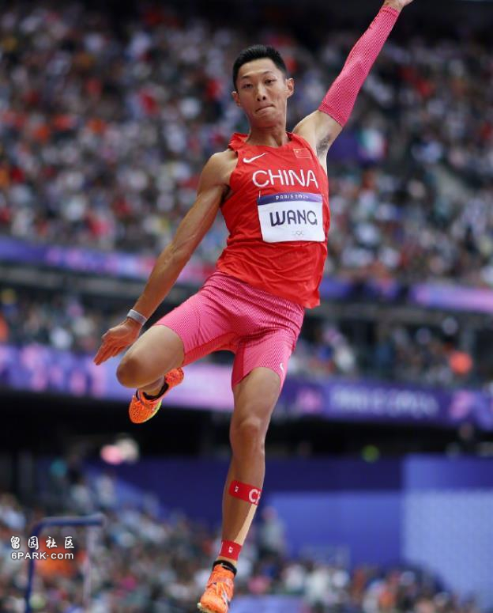
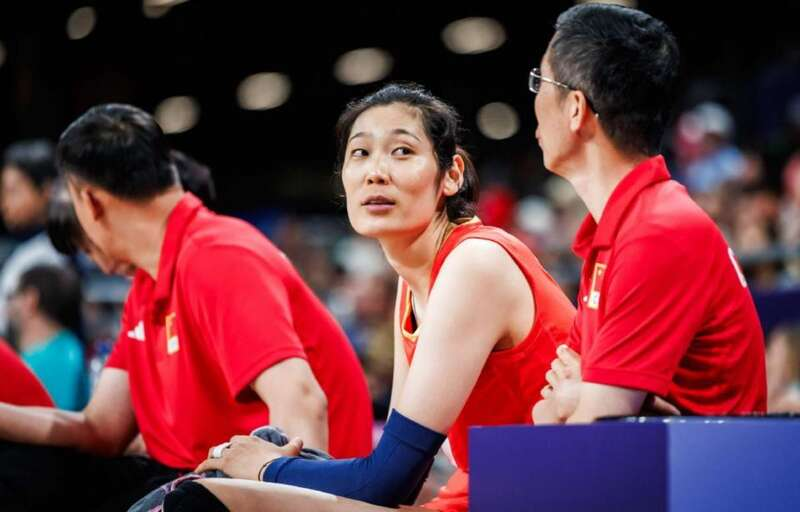
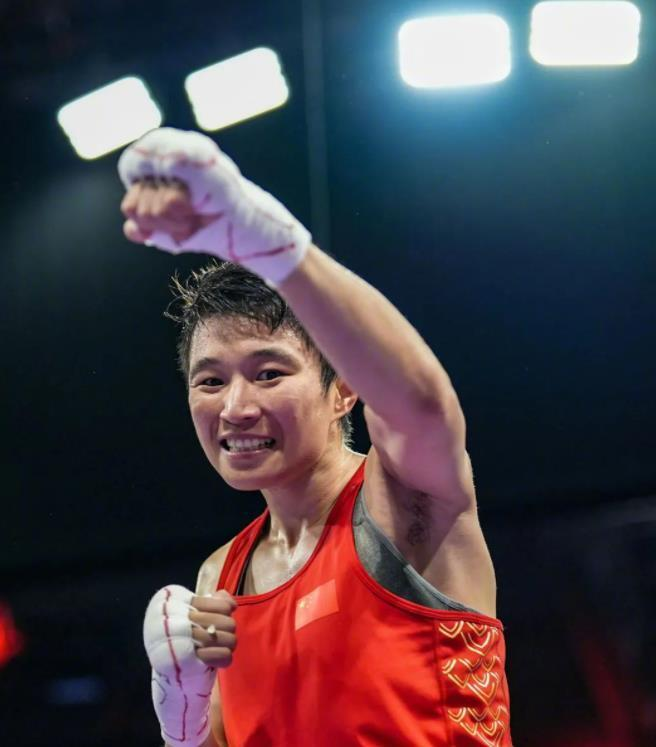
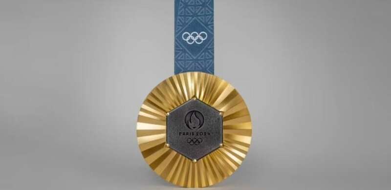

8月6日，巴黎奥运会将进入到第11比赛日的角逐。这个比赛日共决出15枚金牌，分布在马术、帆船、跳水、滑板、摔跤、场地自行车和田径等项目。这个比赛日最引人关注的，当属全红婵和陈芋汐的女子10米台对决，此外在拳击和摔跤等项目上，中国选手也将向着最高领奖台发起冲击。

跳水——全红婵陈芋汐10米台巅峰对决
女子10米跳台跳水将在这个比赛日决出金牌，此前在预赛和半决赛的比赛当中，全红婵均排名第1位，陈芋汐两次排在了第2的位置。两人联手在双人10米台的比赛为中国队拿下一枚金牌，此番在单人10米台的赛事当中，两人将作为对手争夺最高荣誉。

田径——世锦赛冠军王嘉男冲击最高领奖台
田径项目在这个比赛日决出5枚金牌，中国选手将参与其中2项决赛的角逐。女子链球决赛的比拼当中，中国选手赵杰将出战。资格赛赵杰扔出了72米49的成绩，以第7名的身份跻身决赛。期待赵杰能在决赛有出色表现。
男子跳远决赛的比赛中，中国选手王嘉男和张溟鲲将出战。王嘉男曾在2022年世锦赛拿到过冠军，资格赛他跳出了8米12的赛季最佳，以第3名跻身决赛。张溟鲲7米92排名资格赛第9位，同样获得了晋级资格。决赛王嘉男最大的对手是目前该项目的王者、希腊人滕托格鲁，后者在资格赛跳出了8米32，状态非常出色。

排球——中国女排大战土耳其，力争四强席位
中国女排在1/4决赛将面对土耳其队的挑战，力争能够拿到一个四强席位。小组赛阶段中国女排表现不俗，取得了3战全胜的战绩，小组头名进入淘汰赛。朱婷的伤势可能会成为本场比赛的一个不确定因素，此外中国队需要有更多人站出来，为李盈莹分担压力。不久前的世界女排联赛中国香港站比赛，中国女排曾让二追三击败了土耳其队。此番再次相遇，期待中国女排能再次取得胜利。

其他——杨文璐曹利国冲金，11岁小孩姐登场
摔跤男子古典60公斤级决赛的比赛中，中国选手曹利国将向着金牌发起冲击。曹利国决赛的对手是日本选手文田健一郎，后者是上届奥运会该项目的银牌得主。
拳击赛场上，中国选手杨文璐将在女子60公斤级冲击金牌。作为去年杭州亚运会金牌得主，杨文璐决赛的对手是上届冠军凯莉-哈灵顿，期待杨文璐在决赛有上佳表现。
在滑板女子公园赛预赛的比赛中，11岁的中国小孩姐郑好好将参赛。郑好好是本届奥运会最年轻的参赛选手、中国代表团奥运会历史最年轻的参赛选手、夏奥会和冬奥会历史第5年轻的参赛选手，期待这位刚刚小学毕业的小朋友，能发挥出自己的水平。

8月6日金牌时刻表（北京时间）
16:00 马术 个人场地障碍决赛
20:43 帆船 女子激光雷迪尔级奖牌轮
21:00 跳水 女子10米跳台决赛
21:43 帆船 男子激光级奖牌轮
23:30 滑板 女子公园赛决赛
00:15起 摔跤 男子古典式60公斤级决赛
古典式130公斤级决赛
女子自由式68公斤级决赛
01:57 田径 女子链球决赛
02:10 场地自行车 男子团体竞速赛金牌赛
02:15 田径 男子跳远决赛
02:50 田径 男子1500米决赛
03:14 田径 女子3000米障碍决赛
03:40 田径 女子200米决赛
05:06 拳击 女子60公斤级决赛